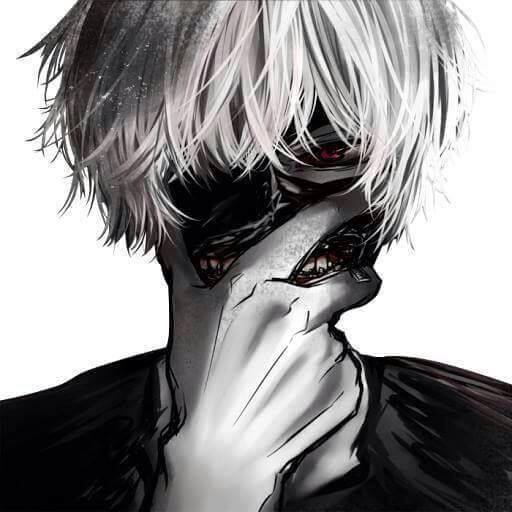

Kể từ ngày lên dẫn dắt đội tuyển Tây Ban Nha, HLV Del Bosque luôn sử dụng đội hình 4-4-2
với 2 cầu thủ đá cao nhất là Torres và Villa. Đây được coi là một quyết định hợp lí bởi
không thể bỏ ai khi đó đều là những tiền đạo hàng đầu thế giới hiện nay. Với đội hình đó,
Seleccion vẫn thi đấu rất thành công tại vòng loại với kỉ lục toàn thắng, nên nhiều người
đã quên rằng đây không phải sơ đồ tối ưu cho các nhà đương kim vô địch châu Âu và họ cần
có phương án dự phòng trong trường hợp một trong hai tiền đạo không thể thi đấu.
hdfdk kdfkjdhfkdh fdfkjd fkdkf dkfdkf dkhfkfoao f afhkjdsf kdsf hafkjdah fkdsah kfhdskfhd
fdfkhdskafh fadhfkdhf kda fkd kfhdkf kdgkdhg kd dfhgkjfdhgkdf gkdf gkdfhgkdh gkdhgkdhfgk
dfkghdfgk dgd gjhdfgk dkgh dfkghdfkg k ghfsdkjgdfkg kdghkd gk dgh k